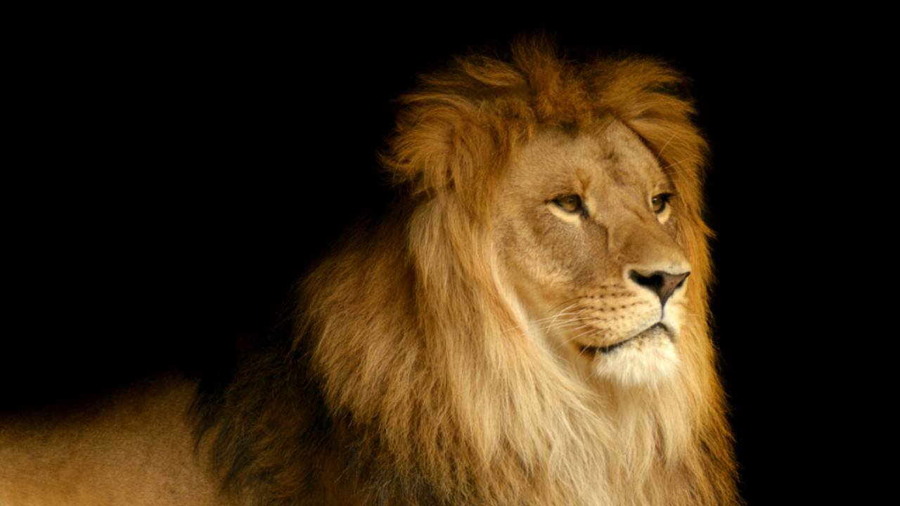

León
- Reino:
- Filo:
- Clase:
- Orden:
- Suborden:
- Familia:
- Subfamilia:
- Género:
- specie:
- Etimología
- leónderiva del latín leo, relacionado con el griego antiguo λέων (léōn)
- Melena
- La melena del león macho, única entre los félidos, es uno de los rasgos más característicos de la especie. Hace que el león parezca más grande, causando una excelente intimidación, lo que ayuda al león en los combates contra otros leones y contra la principal especie competidora de los leones en África, la hiena manchada. La presencia, ausencia, color y tamaño de la melena están asociadas con las condiciones genéticas, la madurez sexual, el clima y la producción de testosterona.
